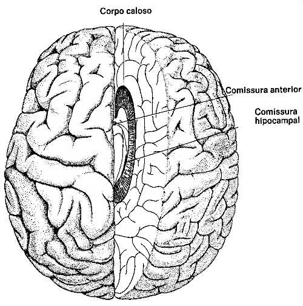
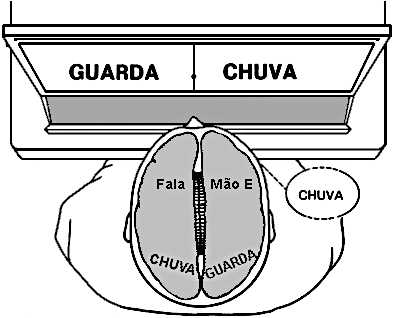
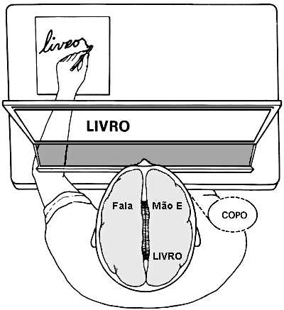
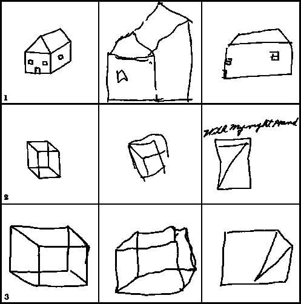
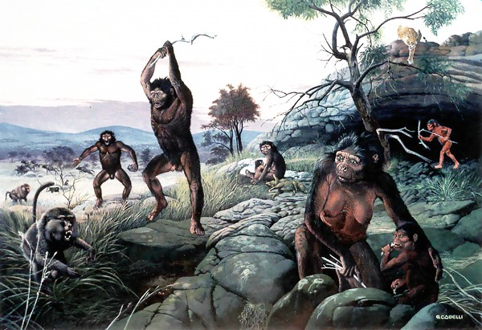

VII Os amantes e os loucos
Os cães de caça possuem uma inusitada capacidade de seguir trilhas utilizando o olfato. Depois de lhes serem apresentadas as “pistas” ― um retalho de roupa pertencente à pessoa em questão, que pode ser uma criança perdida ou um réu fugitivo ―, saem latindo alegremente e seguem com perfeição o rastro. Os cães e muitos outros animais de caça possuem essa habilidade em grau extremamente desenvolvido. A pista original contém um vestígio olfativo, um cheiro. O cheiro é simplesmente a percepção de uma variedade determinada de moléculas — neste caso, uma molécula orgânica. Para que o cão de caça seja capaz de rastrear é preciso que ele perceba a diferença de cheiro — de moléculas corporais características — entre o alvo e um desorientador e tumultuado fundo composto de outras moléculas, algumas originárias de outros seres humanos que rumaram na mesma direção (inclusive os componentes da expedição de busca) e algumas de outros animais (inclusive o próprio cão). O número de moléculas desprendidas por uma pessoa ao caminhar é relativamente pequeno. Mas, mesmo com uma pista bastante “fria” — várias horas após o desaparecimento, por exemplo —, os cães de caça podem farejar e obter êxito.
Essa extraordinária capacidade requer uma discriminação olfativa extremamente apurada, função, como já vimos, bem desempenhada até pelos insetos. O que há de mais notável nos cães de caça, o que contrasta com os insetos, é sua riqueza de capacidade discriminatória, sua aptidão para distinguir entre muitos cheiros diferentes, cada qual perdido em uma imensa variedade de outros odores de fundo. O cão de caça realiza uma complexa classificação da estrutura molecular; ele faz distinção entre a nova molécula e uma grande coleção de outras moléculas previamente sentidas pelo olfato. E, mais, o cão de caça só precisa de um minuto, se não menos, para se familiarizar com o cheiro do qual guardará lembrança por longo período de tempo.
O reconhecimento olfativo individual de moléculas é aparentemente efetuado por receptores nasais sensíveis a determinados grupos funcionais, ou partes, de moléculas orgânicas. Um dos receptores, por exemplo, pode ser sensível ao COOH, outro ao NH 2, e assim por diante. (C representa carbono, H hidrogênio, O oxigênio e N nitrogênio.) Os vários anexos e projeções das moléculas complexas aparentemente aderem a diferentes receptores moleculares na mucosa nasal, e os detectores de todos os grupos funcionais combinam-se para reunir uma espécie de imagem olfativa coletiva da molécula. Esse é um sistema sensorial extremamente apurado. O mais complexo aparelho desse tipo que o homem já fabricou, o espectrômetro de massa/ cromatografia gasosa, em geral não possui nem a sensibilidade nem a capacidade discriminatória do cão de caça, embora grande progresso esteja sendo alcançado nessa tecnologia. O sistema olfativo dos animais evoluiu até o atual refinamento graças às intensas pressões da seleção. A detecção precoce de parceiros, predadores e presas constitui questão de vida ou morte para a espécie. O sentido do olfato é muito antigo e, na verdade, grande parte da evolução precoce acima do nível do chassi neural* pode ter sido estimulada pelas pressões seletivas dessa detecção molecular: os característicos bulbos olfativos* no cérebro encontram-se entre os primeiros componentes do neocórtex que se desenvolveram na história da vida. O sistema límbico foi até chamado de “rinencéfalo”, ou seja, o cérebro do olfato, por Herrick.
O sentido do olfato não é tão bem desenvolvido no homem como o é no cão de caça. Apesar das dimensões de nossos cérebros, nossos bulbos olfativos* são menores que os de muitos outros animais, e evidentemente o olfato desempenha um papel secundário em nosso dia-a-dia. As pessoas, em média, são capazes de distinguir relativamente poucos odores. Nossas descrições verbais e nossa percepção analítica do cheiro, mesmo com poucos odores em nosso repertório, são extremamente pobres. Nossa resposta a um odor mal se assemelha, em nossa própria percepção, à verdadeira estrutura tridimensional da molécula responsável pelo cheiro. O olfato é uma complexa função cognitiva que podemos desempenhar dentro de certos limites — e com considerável precisão —, mas que, na melhor das hipóteses, descrevemos de forma inadequada. E, se o cão de caça pudesse falar, acho que ele teria a mesma deficiência para descrever com pormenores aquilo que faz tão bem.
Tal como o olfato é o principal meio pelo qual os cães e muitos outros animais percebem suas imediações, a visão é o canal de informação primordial do homem. Somos capazes de uma sensibilidade e discriminação visuais pelo menos tão notáveis quanto as capacidades olfativas do cão de caça. Podemos, por exemplo, discriminar fisionomias. Bons observadores podem distinguir entre dezenas e até centenas de milhares de fisionomias diferentes; o “Identikit”, material amplamente utilizado pela Interpol e pela polícia do Ocidente em geral, é capaz de formar mais de 10 bilhões de rostos diferentes. O valor de tal capacidade para a sobrevivência, sobretudo para nossos ancestrais, é bastante evidente. Mesmo assim, é extremamente difícil descrever fisionomias que somos perfeitamente capazes de reconhecer. As testemunhas normalmente revelam total incapacidade de fazer uma descrição verbal de um indivíduo visto anteriormente, mas indicam com precisão o indivíduo quando o tornam a ver. E, embora tenham ocorrido casos de identidade trocada, os tribunais estão sempre prontos a admitir o testemunho de qualquer adulto nas questões de reconhecimento fisionômico. Considere-se como podemos distinguir com facilidade uma “celebridade” de uma vasta multidão de faces, ou como salta aos olhos nosso próprio nome quando figura em uma lista sem ordem alfabética.
Os seres humanos e outros animais possuem capacidades cognitivas e perceptivas de grande número de dados altamente complexos, que simplesmente ultrapassam a consciência verbal e analítica que tantos de nós consideramos ser tudo o que há de nós. Essa outra espécie de conhecimento, nossas percepções e cognições não-verbais, é frequentemente considerada “intuitiva”. A palavra não significa “inata”. Ninguém nasce com um repertório de fisionomias implantadas no cérebro. A palavra transmite, creio eu, um difuso mal-estar por nossa incapacidade de compreender como chegamos a tal conhecimento. Mas o conhecimento intuitivo tem uma história evolutiva extremamente longa; se considerarmos a informação contida no material genético, ele remonta à origem da vida. O outro de nossos dois modos de conhecimento ― aquele que no Ocidente expressa irritação acerca da existência do conhecimento intuitivo — representa uma aquisição evolutiva bastante recente. O pensamento racional, que é inteiramente verbal (com frases completas, por exemplo), tem provavelmente algumas dezenas ou centenas de milhares de anos. Existem pessoas que em suas vidas conscientes são inteiramente racionais, e muitas são quase totalmente intuitivas. Cada um dos grupos, com muito pouca compreensão do valor recíproco dessas duas espécies de capacidade cognitiva, ridiculariza o outro: “confuso” e “amoral” são adjetivos típicos usados nas discussões mais educadas. Por que devemos ter duas formas diferentes de pensar definidas e complementares que se integram tão mal uma na outra?
O primeiro indício de que essas duas formas de pensar se localizam no córtex cerebral* provém do estudo de lesões cerebrais. Traumatismos ou acidentes vasculares no lobo temporal ou parietal do hemisfério esquerdo do neocórtex provocam caracteristicamente prejuízo da capacidade de ler, escrever, falar e fazer cálculos aritméticos. Lesões equivalentes no hemisfério direito acarretam prejuízo da visão tridimensional, reconhecimento do modelo, capacidade musical e raciocínio holístico. O reconhecimento fisionômico reside mais no hemisfério direito, e aqueles que “jamais esquecem uma cara” efetuam o padrão de reconhecimento no lado direito. Lesões no lobo parietal direito, realmente, resultam às vezes na incapacidade de o paciente reconhecer o próprio rosto no espelho ou em uma fotografia. Essas observações sugerem fortemente que aquelas funções que descrevemos como “racionais” localizam-se principalmente no hemisfério esquerdo, e aquelas que consideramos “intuitivas”, sobretudo no direito.
As experiências recentes mais importantes nesse terreno foram realizadas por Roger Sperry e seus colaboradores no Instituto de Tecnologia da Califórnia. Na tentativa de tratar casos graves de epilepsia tipo grande mal, cujos pacientes sofrem de crises convulsivas praticamente contínuas (às vezes até duas crises por hora), cortava-se o corpo caloso*, o feixe principal de fibras neurais que estabelece a conexão entre os hemisférios direito e esquerdo do neocórtex (ver figura abaixo). A cirurgia pretendia evitar que uma espécie de tempestade neurelétrica em um dos hemisférios se propagasse para o outro, distante do foco. Esperava-se que pelo menos um dos hemisférios, no pós-operatório, ficasse isento das crises subsequentes. O inesperado e bem-vindo resultado foi o fantástico declínio na frequência e na intensidade das crises em ambos os hemisférios — como se houvesse anteriormente um feedback positivo, através do qual a atividade elétrica epiléptica em cada hemisfério estimulava o outro através do corpo caloso*.
Tais pacientes com “cérebro partido” parecem, ao exame superficial, inteiramente normais após a cirurgia. Alguns relatam o total desaparecimento de sonhos vívidos que tinham antes da operação. Um desses pacientes permaneceu incapaz de falar por um mês depois da cirurgia, mas sua afasia* regrediu mais tarde. O comportamento e o aspecto normal dos pacientes com cérebro partido por si mesmo sugerem que é sutil a função do corpo caloso*. Por aí passa um feixe de 200 milhões de fibras nervosas que processam vários bilhões de bits* por segundo entre os dois hemisférios cerebrais. Contém cerca de 2% do número total de neurônios no neocórtex. E mesmo assim, quando seccionado, nada parece mudar. Eu acho lógico que ocorram de fato alterações, mas essas exigem um estudo mais aprofundado.

[Imagem: Vista superior de um cérebro humano no qual os dois hemisférios cerebrais foram separados neurocirurgicamente em uma tentativa bem-sucedida de controlar convulsões epilépticas. A separação é efetuada principalmente pelo corte do corpo caloso*. As ligações menores dos dois hemisférios, a comissura anterior e a comissura hipocampal* às vezes também são seccionadas. (Copyright © 1967 by Scientific American.)]

[Imagem: Representação esquemática, segundo Sperry, do mapeamento do mundo externo nos dois hemisférios do neocórtex. Os campos visuais direito e esquerdo são projetados, respectivamente, nos lobos occipitais esquerdo e direito. O controle dos lados direito e esquerdo do corpo é cruzado também, bem como grande parte da audição. Os odores são projetados nos hemisférios no mesmo lado pelo qual a narina recebe o estimulo.]
Quando examinamos um objeto à nossa direita, ambos os olhos convergem para o que chamamos de campo visual direito; e, à nossa esquerda, para o campo visual esquerdo. Mas, em virtude da forma como se conectam os nervos ópticos, o campo visual direito é integrado no hemisfério esquerdo e o campo visual esquerdo, no hemisfério direito. Da mesma forma, os sons do ouvido direito são integrados primariamente no hemisfério esquerdo do cérebro e vice-versa, embora haja um pouco de integração auditiva no mesmo lado — por exemplo, sons provenientes do ouvido esquerdo no hemisfério esquerdo. Não ocorre esse cruzamento de função no sentido olfativo, mais primitivo, e um odor detectado pela narina esquerda é integrado exclusivamente no hemisfério esquerdo. No entanto, a informação trocada entre o cérebro e os membros é cruzada. Objetos sentidos pela mão esquerda são percebidos primariamente no hemisfério direito e as ordens dadas à mão direita para que escreva uma frase são integradas no hemisfério esquerdo. Em 90% dos indivíduos normais, os centros da fala localizam-se no hemisfério esquerdo.
Sperry e seus colaboradores realizaram uma excelente série de experiências nas quais estímulos separados são aplicados aos hemisférios esquerdo e direito dos pacientes com cérebro partido. Em uma experiência clássica, a palavra “guardachuva” é projetada rapidamente sobre uma tela — mas “guarda” no campo visual esquerdo e “chuva” no campo visual direito. O paciente informa que viu a palavra “chuva”, e é evidente que, pelo menos em termos de sua capacidade de comunicarse verbalmente, ele não tem ideia de que o hemisfério direito recebeu uma impressão visual da palavra “guarda”. Quando interrogado sobre o tipo de chuva, o paciente arrisca: muita chuva, pouca chuva, sol e chuva. Mas quando, em experiência equivalente, pede-se ao paciente que escreva o que viu, mas com sua mão esquerda dentro de uma caixa, ele garatuja a palavra “guarda”. Ele sabe pelo movimento da mão que escreveu alguma coisa, mas como não pode vê-la, não há meio de a informação chegar ao hemisfério esquerdo que controla a atividade verbal. Por incrível que possa parecer, ele é capaz de escrever a resposta, mas não consegue adivinhá-la.

[Imagem: O indivíduo lê e informa verbalmente apenas a palavra projetada em seu campo visual direito. Não há associação, nem mesmo ao inconsciente, das palavras dos campos visuais esquerdo e direito. Segundo Sperry.]
Muitas outras experiências revelam resultados semelhantes. Em uma delas, o paciente é capaz de sentir letras tridimensionais de plástico, fora do alcance visual, com a mão esquerda. As letras disponíveis só podem formar uma palavra correta na língua, como “flor” ou “bom”, a qual o paciente é capaz de descobrir: o hemisfério direito possui uma precária capacidade verbal, grosseiramente comparável à dos sonhos. Mas, após soletrar corretamente a palavra, o paciente é incapaz de dar qualquer indicação verbal de qual palavra soletrou. Parece evidente que, nos pacientes com cérebro partido, cada hemisfério tem uma vaga ideia do que o outro hemisfério aprendeu.

[Imagem: Um paciente com cérebro partido ao ser apresentado a uma palavra em seu campo visual esquerdo escreve corretamente (e em letras manuscritas de preferência, e não em letra de forma) a palavra com a mão fora do alcance visual. Mas quando se pergunta ao indivíduo o que sua mão esquerda escreveu, ele dá uma resposta inteiramente errada (“copo”). Segundo Nebes e Sperry.]
A incompetência geométrica do hemisfério esquerdo é impressionante; basta ver a ilustração seguinte: um paciente destro, de cérebro partido, era capaz de copiar representações simples de figuras tridimensionais com precisão apenas com sua mão esquerda (sem treino). A superioridade do hemisfério direito em geometria parece restrita a tarefas manuais; esse domínio não se aplica a outros tipos de funções geométricas que não exigem coordenação mão-olho-cérebro. Essas atividades geométricas de manipulação parecem localizar-se no lobo parietal do hemisfério direito, em um lugar correspondente, no hemisfério esquerdo, à linguagem. M. S. Gazzaniga, da Universidade Estadual de Nova York, em Stony Brook, sugere que essa especialização hemisférica ocorre porque a linguagem é desenvolvida no hemisfério esquerdo antes de a criança adquirir competência considerável em habilidades manuais e visualização geométrica. De acordo com esse ponto de vista, a especialização do hemisfério direito para a competência geométrica é uma especialização por falta — a competência do hemisfério esquerdo foi redirigida no sentido da linguagem.

[Imagem: Incompetência relativa do hemisfério esquerdo em copiar figuras geométricas. Segundo Gazzaniga. ]
Pouco tempo depois da conclusão de uma das experiências mais convincentes de Sperry, ele deu uma festa para a qual foi convidado um famoso físico teórico com o corpo caloso* íntegro. O físico, conhecido por seu grande senso de humor, sentou-se quieto, escutando com interesse as descrições de Sperry acerca das descobertas relacionadas com o cérebro partido. A noite se passou, os convidados despediram-se e Sperry viu-se à porta acenando atélogo para o último deles. O físico estendeu a mão direita, apertou a de Sperry e disse-lhe que tivera uma noite fascinante. Depois, com um pequeno movimento, inverteu as posições dos pés direito e esquerdo, estendeu a mão esquerda e disse em voz gutural e estridente: “Eu quero que você saiba que também tive momepntos terríveis”.
Quando a comunicação entre os dois hemisférios cerebrais está prejudicada, o paciente costuma achar inexplicável seu próprio comportamento e é evidente que mesmo “falando claro” o indivíduo que fala pode não saber o que está dizendo. (Compare com a citação de Fedro na Introdução deste livro.) A relativa independência dos dois hemisférios se faz sentir na vida diária. Já nos referimos à dificuldade de descrever verbalmente as complexas percepções do hemisfério direito. Muitas tarefas físicas elaboradas, inclusive o atletismo, parecem ter pouca participação do hemisfério esquerdo. Uma reconhecida artimanha em tênis, por exemplo, consiste em perguntar ao adversário onde é exatamente que ele coloca o polegar na raquete. Acontece frequentemente que a atenção do hemisfério esquerdo voltada para essa pergunta destruirá, pelo menos por breve período de tempo, o seu jogo. Grande parte da habilidade musical é função do hemisfério direito. É lugar-comum memorizar uma canção ou um tema musical sem ter a menor capacidade de escrevê-la em caracteres musicais. Ao piano, podemos descrever isso dizendo que nossos dedos (mas não nós mesmos) memorizaram a música.
Tal memorização pode ser bastante complexa. Recentemente, tive o prazer de testemunhar o ensaio de um concerto de piano por uma grande orquestra sinfônica. Nesse tipo de ensaio, o maestro geralmente não começa do início e vai seguindo até o fim. Em vez disso, em virtude dos altos custos do tempo despendido, bem como da competência dos executantes, ele se concentra nos trechos difíceis. Fiquei impressionado não apenas com o fato de a solista ter decorado toda a composição, mas também por ser capaz de começar em qualquer ponto solicitado da composição após uma rápida olhada no compasso designado na partitura. Essa invejável habilidade é uma função mista do hemisfério esquerdo e direito. É extremamente difícil memorizar uma composição musical que nunca se ouviu antes de forma a ser capaz de começar a partir de qualquer trecho. Em terminologia de computador, a pianista tinha acesso* aleatório, em vez de acesso* seriado, à composição.
Esse é um bom exemplo da cooperação entre os hemisférios esquerdo e direito em muitas das atividades humanas mais difíceis e altamente valorizadas. É de importância capital não superestimar a separação das funções em qualquer dos lados do corpo caloso* em um ser humano normal. A existência de um sistema telefônico tão complexo quanto o corpo caloso* tem de significar, cumpre frisar novamente, que a interação dos hemisférios é uma função humana vital.
Além do corpo caloso*, existe outra ligação telefônica neural entre os hemisférios esquerdo e direito, que se denomina comissura anterior*. É muito menor que o corpo caloso* e está presente no cérebro dos peixes, coisa que não ocorre com o corpo caloso*. Nas experiências humanas com o cérebro partido nas quais o corpo caloso* é secionado, a informação olfativa é invariavelmente transferida entre os hemisférios. A transferência ocasional de parte da informação visual e auditiva por intermédio da comissura anterior* também parece ocorrer, mas varia de paciente para paciente. Essas observações são compatíveis com a anatomia e a evolução; a comissura anterior* (e a comissura hipocampal*) situa-se mais profundamente em relação ao corpo caloso* e transfere a informação ao córtex límbico e talvez a outros componentes cerebrais mais arcaicos.
Os seres humanos apresentam uma interessante separação das habilidades musicais e verbais. Pacientes portadores de lesões do lobo direito ou de hemisferectomia direita sofrem considerável prejuízo da capacidade musical mas não da verbal — sobretudo do reconhecimento e da memória das melodias. Sua capacidade de ler música, no entanto, não é prejudicada. Isso parece perfeitamente compatível com a separação das funções descritas: a memorização e a apreciação da música envolvem o reconhecimento de padrões auditivos e um temperamento holístico em lugar de analítico. Existem alguns indícios de que a poesia é parcialmente função do hemisfério direito; em alguns casos, o paciente começa a escrever poesia pela primeira vez na vida depois de uma lesão no hemisfério esquerdo tê-lo deixado afásico. Mas isso seria, talvez, nas palavras de Dryden, “mera poesia”. Ademais, o hemisfério direito é aparentemente incapaz de fazer rimas.
A separação ou lateralização da função cortical foi descoberta através de experiências realizadas em indivíduos portadores de lesões cerebrais. É, contudo, importante demonstrar que as conclusões se aplicam aos indivíduos normais. As experiências de Gazzaniga apresentam a indivíduos sem lesão cerebral metade de uma palavra no campo visual esquerdo e metade no direito, como no caso dos pacientes de cérebro partido, e a reconstrução da palavra é monitorizada. Os resultados indicam que, no cérebro normal, o hemisfério direito efetua muito pouco processamento da linguagem, mas, por outro lado, transmite o que observou no hemisfério esquerdo através do corpo caloso*, onde a palavra é formada de uma forma integral. Gazzaniga também encontrou um paciente de cérebro partido cujo hemisfério direito era surpreendentemente competente nas habilidades linguísticas: mas esse paciente sofrera uma patologia cerebral na região temporoparietal do hemisfério esquerdo nos primeiros anos de vida. Já nos referimos à capacidade cerebral de relocalizar funções após lesão nos dois primeiros anos de vida, mas não posteriormente.
Robert Ornstein e David Galin, do Instituto Neuropsiquiátrico Langley Porter, em San Francisco, afirmam que, à medida que os indivíduos normais passam das atividades intelectuais analíticas para as sintéticas, a atividade eletrencefalográfica dos hemisférios correspondentes varia de uma forma prevista: quando o indivíduo faz cálculos aritméticos mentalmente, por exemplo, o hemisfério direito exibe um ritmo alfa característico de um hemisfério cerebral “ocioso”. Se esse resultado for confirmado, será uma descoberta muito importante.
Ornstein oferece uma analogia bastante interessante para explicar por que, pelo menos no Ocidente, fizemos tanto contato com as funções do hemisfério esquerdo e tão pouco com as do direito. Ele sugeriu que nossa percepção da função do hemisfério direito assemelha-se à nossa capacidade de ver estrelas durante o dia. O sol está tão brilhante que as estrelas se tornam invisíveis, apesar do fato de estarem tão presentes no firmamento durante o dia quanto durante a noite. Quando o sol se põe, somos capazes de perceber as estrelas. Da mesma forma, o brilho de nossa aquisição evolutiva mais recente, as capacidades verbais do hemisfério esquerdo, obscurece nossa percepção das funções do intuitivo hemisfério direito, que em nossos ancestrais deve ter representado o principal meio de perceber o mundo. (Refere-se frequentemente a que a maconha aguça nossa percepção e nossas habilidades na música, na arte, no reconhecimento de padrões e sinais e nossa sensibilidade à comunicação não-verbal. De acordo com o que sei, nunca foi relatada uma melhora na capacidade de ler e compreender Ludwig Wittgenstein ou Immanuel Kant; de calcular os reforços das pontes; ou de computar as transformações de Laplace. Comumente o indivíduo tem dificuldade até para escrever seus pensamentos de forma coerente. Eu me pergunto se, ao invés de estimular, os canabinóis (os ingredi-entes ativos da maconha) não suprimem simplesmente o hemisfério esquerdo e permitem a manifestação das estrelas. Esse também pode ser o objetivo de estados meditativos de muitas religiões orientais. )
O hemisfério esquerdo integra a informação de forma sequencial; o hemisfério direito simultaneamente, recebendo vários impulsos ao mesmo tempo. O hemisfério esquerdo trabalha em série; o direito, em paralelo. O hemisfério esquerdo, de certa forma, se assemelha a um computador digital; o direito, a um computador analógico. Sperry sugeriu que a separação da função dos dois hemisférios é consequência de uma “incompatibilidade básica”. Talvez hoje sejamos capazes de perceber diretamente as operações do hemisfério direito, sobretudo quando o hemisfério esquerdo repousa ― ou seja, durante os sonhos.
No capítulo anterior, sugeri que um dos aspectos mais importantes do estado onírico seria a falta de domínio, durante a noite, dos processos do complexo-R* que estiveram intensamente reprimidos pelo neocórtex durante o dia. Mas mencionei que o importante conteúdo simbólico dos sonhos mostrava considerável participação neocortical, embora as frequentes dificuldades referidas de ler, escrever e de usar a memória aritmética e verbal durante os sonhos fossem enormes.
Além do conteúdo simbólico dos sonhos, outros aspectos da imagem onírica assinalam a participação neocortical no processo onírico. Por exemplo, muitas vezes tive sonhos nos quais o desfecho ou a “surpresa do enredo” só eram possíveis em virtude de pistas — aparentemente sem importância — inseridas muito antes do sonho. Toda a trama criada no sonho devia estar na minha mente por ocasião de seu início. (A propósito, o tempo necessário para o desenrolar dos acontecimentos durante o sonho equivale ao tempo transcorrido na vida real.) Conquanto o conteúdo de muitos sonhos pareça casual, outros são notavelmente bem-estruturados; esses sonhos em muito se assemelham às peças teatrais.
Agora reconhecemos a possibilidade muito atraente de que o hemisfério esquerdo do neocórtex seja suprimido no estado onírico, enquanto o hemisfério direito — que possui uma extensa familiaridade com os sinais, mas apenas hesitante instrução verbal — está funcionando bem. É possível que o hemisfério esquerdo não esteja completamente desligado à noite, mas que esteja executando tarefas que o tornam inacessível à consciência: está intensamente ocupado com a seleção dos dados liberados pela memória de curto prazo, determinando o que deve permanecer na memória de longo prazo.
Existem casos eventuais, embora fidedignos, de difíceis problemas intelectuais resolvidos em sonho. Talvez o mais famoso tenha sido o sonho do químico alemão Friedrich Kekulé von Stradonitz. Em 1865, o problema mais urgente e enigmático na química orgânica estrutural era a natureza da molécula do benzeno. As estruturas de diversas moléculas orgânicas simples vinham sendo deduzidas a partir de suas propriedades, e todas eram lineares, estando os átomos ligados uns aos outros em linha reta. Segundo seu próprio relato, Kekulé estava cochilando em uma carruagem puxada a cavalo quando teve uma espécie de sonho em que átomos dançavam em disposições lineares. Subitamente, o final da cadeia emaranhou-se com o começo e formou um anel de lentos movimentos rotativos. Ao despertar e lembrar-se desse fragmento do sonho, Kekulé percebeu imediatamente que a solução para o problema do benzeno era um anel hexagonal de átomos de carbono, e não uma cadeia reta. Note-se, contudo, que isso é puramente um exercício de reconhecimento de modelo e não uma atividade analítica. É típico de quase todos os atos criativos famosos consumados em estado onírico: são atividades do hemisfério direito, e não do esquerdo.
O psicanalista americano Erich Fromm escreveu: “Não devemos esperar que, quando privados do mundo exterior, regridamos temporariamente a um estado mental primitivo, animalesco e destituído de razão? Muito se pode dizer em favor de tal suposição, e o ponto de vista de que tal regressão representa a característica essencial do sono, e por conseguinte da atividade onírica, foi sustentado por muitos estudiosos, de Platão a Freud ”. Fromm prossegue e assinala que às vezes atingimos em sonho percepções que nos fogem em vigília. Mas acredito que essas percepções sempre têm um caráter intuitivo ou de reconhecimento de modelo. O aspecto “animalesco” do estado onírico pode ser compreendido como as atividades do complexo-R* e do sistema límbico, e a percepção intuitiva eventualmente brilhante, como a atividade do hemisfério direito do neocórtex. Ambos os casos ocorrem porque em cada um deles as funções repressivas do hemisfério esquerdo estão em grande parte desligadas. Fromm chama essas percepções do hemisfério direito de “a linguagem esquecida” — e ele admite que constituem a origem comum dos sonhos, contos de fadas e mitos.
Nos sonhos, às vezes estamos cientes de que uma pequena parte de nós está placidamente vigiando; frequentemente, em uma parte do sonho, existe uma espécie de observador. É essa parte “observadora” de nossas mentes que eventualmente — às vezes no meio de um pesadelo — nos diz: “Isto é apenas um sonho”. É o “observador” que avalia a unidade dramática de uma trama bem estruturada. A maior parte do tempo, no entanto, o “observador” está em completo silêncio. Nas experiências com drogas psicodélicas — por exemplo, com maconha ou LSD —, a presença desse “observador” é relatada comumente. As experiências com LSD podem ser extremamente terríveis, e muitas pessoas me contaram que a diferença entre a sanidade e a loucura na experiência do LSD repousa inteiramente na presença continuada do “observador”, uma pequena e silenciosa parte da consciência desperta.
Em uma experiência com maconha, meu informante tomou conhecimento da presença e, de uma estranha forma, da incongruência desse silencioso “observador”, que responde com interesse e eventual comentário crítico à imagem onírica calidoscópica da experiência com a maconha, mas da qual não participa. “Quem é você?”, perguntou meu informante silenciosamente. “Quem quer saber?”, respondeu ele, tornando a experiência muito semelhante a uma parábola sufi ou zen. Mas a pergunta de meu informante é profunda. Eu diria que o observador representa uma pequena parcela das faculdades críticas do hemisfério esquerdo, que funciona muito mais nas experiências psicodélicas do que nas oníricas, mas está presente, até certo ponto, em ambas. Entretanto, persiste a antiga indagação sem resposta: “Quem é que faz a pergunta?”; talvez seja outro componente do hemisfério cerebral esquerdo.
Verificou-se uma assimetria dos lobos temporais entre os hemisférios esquerdo e direito nos seres humanos e nos chimpanzés, sendo uma porção do lobo esquerdo consideravelmente mais desenvolvida. Os seres humanos nascem com essa assimetria (que se desenvolve precocemente na vigésima nona semana de gestação), o que sugere uma forte predisposição genética a controlar a fala no lobo temporal esquerdo. (Contudo, no primeiro ou segundo ano de vida, as crianças portadoras de lesões no lobo temporal esquerdo são capazes de desenvolver todas as funções da fala na porção correspondente do hemisfério direito, sem dificuldade. Em idade mais avançada, essa substituição é impossível.) Ademais, observa-se a lateralização no comportamento das crianças pequenas. Elas têm maior capacidade de compreender os elementos verbais com o ouvido direito e os elementos não-verbais com o esquerdo; isso também se verifica nos adultos. Da mesma forma, os lactentes gastam mais tempo em média olhando os objetos à sua direita do que os objetos à sua esquerda, e exigem um ruído mais alto no ouvido esquerdo do que no direito para provocar uma resposta. Embora não se tenha apurado assimetria evidente desse tipo nos cérebros ou no comportamento dos antropoides, os resultados de Dewson sugerem que pode haver certa lateralização nos primatas superiores; não existem indícios de assimetria nos lobos temporais dos macacos Rhesus, por exemplo. Poder-se-ia supor, certamente, que as capacidades linguísticas dos chimpanzés são governadas, como nos seres humanos, pelo lobo temporal esquerdo.
O limitado número de gritos simbólicos dos primatas não-humanos parece ser controlado pelo sistema límbico; pelo menos, todo o repertório vocal do macaco-de-cheiro e do macaco Rhesus pode ser provocado pela estimulação elétrica do sistema límbico. A linguagem humana é controlada pelo neocórtex. Por conseguinte, uma etapa essencial na evolução humana deve ter sido a transferência do controle da linguagem vocal do sistema límbico para os lobos temporais do neocórtex, uma transição da comunicação intuitiva para a aprendida. Entretanto, a surpreendente capacidade dos antropoides de aprenderem a linguagem gestual e o vestígio de lateralização do cérebro do chimpanzé sugerem que a aquisição da linguagem simbólica voluntária pelos primatas não é uma conquista recente. Ao contrário, ela remonta a milhões de anos atrás e é compatível com os indícios encontrados nos moldes intracranianos da área de Broca* no Homo habilis.
No cérebro do macaco, as lesões das regiões neocorticais responsáveis pela fala nos seres humanos não prejudicam a vocalização instintiva. O desenvolvimento da linguagem humana deve, portanto, envolver um sistema cerebral essencialmente novo e não simplesmente um remanejamento da maquinaria para os gritos e chamados límbicos. Alguns peritos em evolução humana propuseram que a aquisição da linguagem tenha ocorrido muito tardiamente — talvez somente nas últimas dezenas de milhares de anos — e esteja ligada aos desafios da última era glacial. Os dados, porém, não parecem compatíveis com esse ponto de vista; além disso, os centros da fala do cérebro humano são tão complexos que é muito difícil imaginar sua evolução nos últimos milhares de anos ou desde o clímax da era glacial mais recente.
As indicações sugerem que em nossos ancestrais de algumas dezenas de milhões de anos atrás havia um neocórtex no qual os hemisférios esquerdo e direito desempenhavam funções correspondentes e redundantes. Desde então, a postura ereta, o uso de instrumentos e o desenvolvimento da linguagem promoveram a evolução mútua um do outro, em que uma pequena aquisição na área da linguagem, por exemplo, permitia uma melhora adicional nas machadinhas manuais, e vice-versa. A evolução cerebral correspondente parece ter seguido, através da especialização de um dos dois hemisférios, para o pensamento analítico.
A redundância original, a propósito, equivale a um prudente projeto de computação. Por exemplo, sem nenhum conhecimento da neuranatomia do neocórtex cerebral* , os engenheiros que projetaram a memória a bordo do trem de pouso da nave Viking acoplaram dois computadores idênticos, com programaçāo idêntica. Mas, em virtude da sua complexidade, logo surgiram diferenças entre os computadores. Antes do pouso em Marte, foi feito um teste de inteligência com os computadores (por um computador mais inteligente, da Terra). O cérebro mais “burro” foi então desligado. Talvez a evolução humana se tenha comportado de maneira semelhante e nossas capacidades racionais e analíticas altamente dotadas se localizem no “outro” cérebro ― aquele que não era totalmente capaz de pensamento intuitivo. A evolução utiliza frequentemente essa estratégia. De fato, a prática evolutiva típica de aumentar a quantidade de informação genética à medida que os organismos se tornam cada vez mais complexos é efetuada pela duplicação de parte do material genético e posteriormente pela lenta especialização de função do conjunto redundante.
Quase sem exceção, todas as línguas humanas formaram uma polaridade, uma curva para a direita. Direito relaciona-se com a legalidade, o comportamento correto, os elevados princípios morais, a firmeza e a masculinidade; esquerdo, com a fraqueza, a covardia, a dispersão de propósito, o mal e a feminilidade. Em inglês, por exemplo, temos rectitude, rectify, righteous, right-hand man, dexterity, adroit 24(do francês à droite = à direita), rights, usada em the rights of man (os direitos do homem), e a expressão in his right mind (em perfeito juízo). Mesmo a palavra ambidextrous significa, em última análise, duas mãos direitas.
Por outro lado (literalmente), temos sinister (quase exatamente a palavra latina que significa esquerdo), gauche (desastroso) (precisamente a palavra francesa para esquerdo), gawky (palerma), gawk (desajeitado) e left-handed compliment (falso cumprimento) . O vocábulo nalevo, em russo, significa esquerdo e também sub-reptício. Em italiano, mancino significa esquerdo e enganador. Não existe nenhuma “Bill of Lefts” (''Carta de Esquerdas, uma alusão a ''Carta de Direitos).
Etimologicamente, a palavra left origina-se de lyft, termo anglo-saxônico que significafraco ouinútil.Direito no sentido legal (como uma ação em acordo com as leis da sociedade) edireito no sentido lógico (como oposto de errado) também são palavras de sentido comum em muitos idiomas. O uso político de esquerda e direita parece remontar à época na qual surgiu uma considerável força política leiga em contraposição à nobreza. Os nobres se colocavam à direita do rei e os novos-ricos radicais — os capitalistas —, à esquerda. Os nobres, naturalmente, tomavam lugar à direita porque o próprio rei também era um nobre; e seu lado direito era a posição favorita. Em teologia, como em política: “À direita de Deus Pai, Todo-Poderoso”.
Podem-se encontrar muitos exemplos de relação entre direito e reto25. No espanhol falado no México, indica-se reto (em frente) dizendo derecho derecho”, no inglês dos negros americanos, right on” é uma expressão de aprovação, frequentemente em relação a um sentimento eloquente ou habilmente expresso.Reto, em linguagem coloquial, muitas vezes significa convencional, correto ouadequado. Em russo,direito éprava, uma palavra cognata depravda, que significaverdade. E em muitos idiomas verdade possui um sentido adicional de reto ouexato, como em “seu objetivo era verdadeiro”.
O teste de QI de Stanford-Binet faz certo esforço para examinar tanto a função do hemisfério esquerdo quanto a do direito. Para a função do hemisfério direito, existem testes nos quais se pede ao indivíduo para adivinhar a configuração aberta de uma folha de papel depois que é dobrada várias vezes e um pequeno pedaço é cortado com uma tesoura; ou para avaliar o número total de blocos em uma pilha quando alguns deles estão escondidos. Embora os preconizadores do teste de Stanford-Binet considerem essas questões de concepção geométrica muito úteis na determinação da “inteligência” das crianças, são cada vez menos úteis nos testes de QI de adolescentes e de adultos. Certamente, não há margem nesses testes para avaliar os rasgos intuitivos. Não surpreende notar que os testes de QI são altamente orientados no sentido do hemisfério esquerdo.
A veemência dos preconceitos em prol do hemisfério esquerdo e da mão direita me faz lembrar uma guerra na qual o lado que mal acabou de vencer rebatiza os partidos em disputa e os pontos controversos, de forma que as gerações futuras não tenham dificuldade em decidir de que lado fica a lealdade prudente. Quando o partido de Lênin era um grupo minoritário dissidente no socialismo russo, ele o denominou Partido Bolchevique, que em russo significa “partido da maioria”. Condescendentemente, e com notável inabilidade, a oposição adotou a designação demencheviques, o partido da minoria. Dentro de uma década e meia, realmente passaram a sê-lo. Da mesma forma, nas associações mundiais das palavras direito e esquerdo parecem transparecer indícios de um rancoroso conflito desde os primórdios da história da humanidade26. O que poderia suscitar tão poderosas emoções?
No combate com armas cortantes ou perfurantes — e em esportes como o boxe, o beisebol e o tênis —, um competidor treinado com o uso da mão direita se en-contrará em desvantagem quando inesperadamente confrontado com um canhoto. Além disso, um malevolente esgrimista canhoto pode ser capaz de se aproximar bastante de seu adversário com a mão direita livre, simulando um gesto de desar-mamento e paz. Essas circunstâncias, porém, não parecem capazes de explicar a extensão e a profundidade da aversão à mão esquerda, nem a amplitude do chauvinismo direita com relação às mulheres — tradicionalmente não-combatentes.
Talvez uma possibilidade remota esteja ligada à carência de papel higiênico nas sociedades pré-industrializadas. Na maior parte da história da humanidade, e em muitos lugares ainda hoje, a mão desocupada é utilizada para a higiene pessoal após a defecação, fato da vida das culturas pré-tecnológicas. Isso não significa que aqueles que seguem esse costume o apreciem. Não é apenas esteticamente indesejável, como também envolve um grave risco de transferir doenças aos outros e a si mesmo. A precaução mais simples consiste em cumprimentar e comer com a outra mão. Quase sem exceção, nas sociedades humanas pré-tecnológicas, a mão esquerda é usada para tais funções higiênicas e a mão direita para cumprimentar e comer. Lapsos ocasionais dessa convenção são encarados com visível horror. Severos castigos têm sido impostos a crianças pequenas pela violação da preferência convencional da mão direita; e muitas pessoas do Ocidente ainda podem lembrar-se de uma época na qual havia rigorosa censura contra apanhar objetos com a mão esquerda. Acredito que este relato possa explicar a virulência contra associações com “esquerda” e a linguagem bombástica autocongratulatória defensiva ligada a associações com a palavra “direita” que são lugares-comuns em nossa sociedade destra. A explicação, no entanto, não esclarece por que as mãos direita e esquerda foram inicialmente escolhidas para essas funções em particular. Pode-se argumentar que, estatisticamente, existe uma possibilidade em duas de que as funções de higiene fossem relegadas à mão esquerda. Mas esperaríamos então que uma em cada duas sociedades adotasse a mão esquerda. Na realidade, tais sociedades não existem. Em uma sociedade na qual a maioria das pessoas é destra, as tarefas que exigem precisão, tais como comer e lutar, devem ser atribuídas à mão favorecida, deixando como sobra as funções de higiene com o lado esquerdo. Mas isso também não explica por que a sociedade é destra. Em seu sentido mais profundo, a explicação deve estar em outro ponto.
Não existe ligação direta entre a mão preferida para a maioria das tarefas e o hemisfério cerebral que controla a fala; a maioria dos canhotos pode ainda apresentar os centros da fala no hemisfério esquerdo, embora esse aspecto seja controverso. Contudo, considera-se que a preferência de uma das mãos esteja ligada à lateralização cerebral. Alguns indícios sugerem que os canhotos são mais propensos a ter problemas relacionados com as funções do hemisfério esquerdo tais como ler, escrever, falar e fazer cálculo aritmético; e mais dotados nas funções do hemisfério direito, tais como a imaginação, o reconhecimento de modelos e a criatividade geral27. Alguns dados sugerem que os seres humanos são geneticamente predispostos a adotar a mão direita. Por exemplo, o número de cristas nas impressões digitais dos fetos durante o terceiro e o quarto mês de gestação é maior na mão direita do que na esquerda, e esse predomínio persiste através da vida fetal e após o nascimento.

[Imagem: Australopitecíneos robustos. Esses animais podem ter apresentado predomínio da mão direita; o australopitecíneo grácil muito provavelmente apresentava (© Giovanni Caselli)
Foram obtidas informações a respeito da predominância da mão nos australopitecíneos a partir de análises de crânios fósseis de babuínos fraturados com clavas de osso ou de madeira por esses parentes primitivos do homem. O descobridor dos fósseis de australopitecíneos, Raymond Dart, concluiu que 20 por cento destes eram canhotos, o que corresponde grosseiramente à fração observada no homem moderno. Em contraposição, enquanto outros animais frequentemente revelam forte preferência por uma das patas, essa preferência é quase equivalente entre esquerda e direita.
As distinções esquerda/direita estão profundamente arraigadas no passado de nossa espécie. Eu me pergunto se algum vestígio da batalha entre o racional e o intuitivo, entre os dois hemisférios do cérebro, não influenciou a polaridade entre as palavras que designam direito e esquerdo: é o hemisfério verbal que controla o lado direito. É possível que não haja realmente mais destreza na mão direita; mas certamente ela tem melhor reputação. O hemisfério esquerdo, ao que parece, sente-se em posição bastante defensiva ― de certo modo inseguro — a respeito do hemisfério direito; e, se isso é verdade, o criticismo verbal do pensamento intuitivo torna-se suspeito no terreno da motivação. Infelizmente, existem todas as razões para se pensar que o hemisfério direito tenha desconfianças semelhantes a respeito do esquerdo — não expressas verbalmente, é claro.
Admitindo a validade de ambos os métodos de pensar, o do hemisfério esquerdo e o do hemisfério direito, devemos indagar se são igualmente eficazes e úteis em circunstâncias novas. Não há dúvida de que o pensamento intuitivo do hemisfério direito é capaz de perceber padrões e conexões difíceis demais para o hemisfério esquerdo; mas ele pode também detectar padrões onde não existe nenhum. O pensamento cético e crítico não representa uma característica do hemisfério direito. E as doutrinas puras do hemisfério direito, particularmente quando criadas durante circunstâncias ou tentativas novas, podem ser erradas ou paranoides.
Experiências recentes realizadas por Stuart Dimond, um psicólogo da Universidade de Cardiff, no País de Gales, utilizam lentes de contato especiais a fim de exibir filmes apenas para o hemisfério direito ou para o esquerdo. Naturalmente, a informação que chega a um hemisfério em um indivíduo normal pode ser transmitida através do corpo caloso* para o outro hemisfério. As pessoas foram solicitadas a avaliar uma série de filmes em termos do conteúdo emocional. Essas experiências mostraram uma notável tendência do hemisfério direito a encarar o mundo de forma mais desagradável, hostil e até amarga do que o hemisfério esquerdo. Os psicólogos de Cardiff também descobriram que, quando ambos os hemisférios estão trabalhando, nossas respostas emocionais são muito semelhantes às do hemisfério esquerdo. O negativismo do hemisfério direito parece ser intensamente moderado no dia-a-dia pelo hemisfério esquerdo, mais condescendente. Mas um caráter emocional escuro e suspeitoso parece ocultar-se no hemisfério direito, o que pode explicar parte da antipatia sentida por nossas personalidades orientadas segundo o hemisfério esquerdo pela qualidade “sinistra” da mão esquerda e do hemisfério direito.
No pensamento paranoide, a pessoa acredita ter detectado uma conspiração — ou seja, um padrão oculto (e malévolo) no comportamento de amigos, sócios ou governantes —, quando na realidade esse padrão não existe. Se existe tal conspiração, o indivíduo pode tornar-se profundamente ansioso, mas seu pensamento não é necessariamente paranoide. Um caso famoso envolveu James Forrestal, o primeiro-secretário da Defesa dos Estados Unidos. No final da II Guerra Mundial, Forrestal convenceu-se de que agentes secretos de Israel o seguiam por toda parte. Seus médicos, igualmente convencidos do absurdo dessa ideia fixa, diagnosticaram paranoia e o confinaram a um andar superior do Hospital do Exército Walter Reed, do qual ele saltou e morreu, em parte pela inadequada supervisão da equipe hospitalar, excessivamente respeitosa com alguém de patente tão elevada. Mais tarde descobriu-se que Forrestal estava realmente sendo seguido por agentes israelenses que temiam um entendimento secreto com os representantes dos países árabes. Forrestal tinha outros problemas, mas de nada valeu a percepção do fato, que foi rotulada como paranoide.
Em épocas de mudança social brusca, há uma tendência para as conspirações, tanto pelos que vão beneficiar-se com a mudança quanto pelos que defendem o status quo, os últimos mais do que os primeiros na história política americana recente. Detectar conspirações onde não existem é um sintoma de paranoia; detectá-las onde existem é um sinal de saúde mental. Um conhecido meu diz: “Na América de hoje, se você não for meio paranoico, você não tem juízo”. A observação, no entanto, tem aplicação global.
Não há como dizer se os padrões extraídos pelo hemisfério direito são reais ou imaginários sem submetê-los ao escrutínio do hemisfério esquerdo. Por outro lado, o mero pensamento crítico, sem vislumbres criativos e intuitivos, sem a busca de novos padrões, é estéril e condenado. A resolução de problemas complexos em circunstâncias novas requer a atividade de ambos os hemisférios cerebrais: o caminho do futuro repousa no corpo caloso.
Um exemplo de comportamento diferente surgido de diferentes funções cognitivas — um entre muitos exemplos — é a reação habitual do homem ante a visão de sangue. Muitos de nós sentimos náuseas ou repugnância, ou até desmaiamos, à visão de alguém sangrando copiosamente. O motivo me parece claro. Durante anos associamos nosso próprio sangramento a dor, ferimento e violação corporal; experi-mentamos então uma solidária ou vicariante agonia ao ver alguém sangrando. Reconhecemos sua dor. Este é quase certamente o motivo pelo qual a cor vermelha é usada para indicar perigo ou parada28em diversas sociedades humanas. (Se o pigmento transportador de oxigênio de nosso sangue fosse verde — o que bioquimicamente seria viável —, todos nós consideraríamos o verde como um aviso quase natural de perigo e acharíamos alegre a cor vermelha.) Um médico treinado, por outro lado, tem um conjunto diferente de percepções quando confrontado com sangue. Qual o órgão lesado? Qual o volume de sangramento? O fluxo é arterial ou venoso? É indicado o uso de torniquete? Essas são, todas elas, funções analíticas do hemisfério esquerdo. Elas exigem processos cognitivos analíticos e mais complexos do que a simples associação: sangue é igual a dor. E elas são muito mais práticas. Se eu fosse ferido, preferiria estar com um médico competente, que através de longa experiência se tivesse tornado quase completamente habituado a hemorragias, do que com um amigo muito solidário que desmaiasse ao menor sinal de sangue. Este último pode ser altamente motivado a não ferir outra pessoa, mas o primeiro será capaz de prestar alguma ajuda, caso ocorra um ferimento. Em uma espécie estruturada sobre bases ideais, essas duas atitudes bastante diferentes estariam presentes simultaneamente no mesmo indivíduo. Em muitos de nós, foi isso mesmo que aconteceu. Os dois modos de pensar possuem complexidade muito diversa, mas têm valor complementar de sobrevivência.
Um exemplo típico da eventual resistência reunida pelo pensamento intuitivo contra as conclusões evidentes do pensamento analítico é a opinião de D. H. Lawrence a respeito da natureza da Lua: “Não adianta me dizer que se trata de uma rocha sem vida no céu! Eu sei que não é”. De fato, a Lua é mais que uma rocha morta no céu. É bonita, tem associações românticas, levanta as marés, pode até ser, em última análise, o motivo da cronologia do ciclo menstrual humano. Mas certamente um de seus atributos é o de ser uma rocha morta no céu. O pensamento intuitivo se sai bastante bem nas áreas em que tivemos experiência pessoal ou evolutiva prévia. Mas nas áreas novas ― tal como a natureza dos objetos celestes mais próximos — o raciocínio intuitivo deve ficar muito tímido em suas afirmações e ansioso por acomodar-se aos horizontes que o pensamento racional extrai da natureza. E, a propósito, os processos do pensamento racional não representam fins em si mesmos, mas devem ser percebidos no contexto mais amplo da prosperidade humana; a natureza e a direção dos esforços racionais e analíticos devem ser determinadas em grande parte por suas implicações humanas fundamentais, como demonstra o pensamento intuitivo.
De certa forma, a ciência pode ser descrita como o pensamento paranoide aplicado à natureza: buscamos as conspirações naturais, as conexões entre dados aparentemente díspares. Nosso objetivo é abstrair padrões da natureza (pensamento do hemisfério direito), mas muitos padrões propostos de fato não correspondem aos dados. Por conseguinte, todos os padrões propostos devem ser submetidos ao crivo da análise crítica (pensamento do hemisfério esquerdo). A busca de padrões sem a análise crítica e o ceticismo rígido sem a busca de padrões constituem os antípodas da ciência incompleta. A perseguição efetiva do conhecimento requer ambas as funções.
O cálculo, a física newtoniana e a óptica geométrica derivaram todos dos argumentos fundamentalmente geométricos e são hoje ensinados e demonstrados em sua maior parte por argumentos analíticos: criar a matemática e a física representa mais uma função do hemisfério direito do que ensiná-la. Isso também é comum hoje. As maiores perspectivas científicas são caracteristicamente intuitivas, e são também caracteristicamente descritas nos artigos científicos por argumentos analíticos lineares. Não existe qualquer anomalia nisso: ao contrário, é como deve ser. Os principais componentes do ato criativo são do hemisfério direito. Mas os pensamentos sobre a validade do resultado são principalmente do hemisfério esquerdo.
Foi uma descoberta luminosa de Albert Einstein, fundamental para a Teoria da Relatividade Geral, que a gravitação pudesse ser compreendida igualando o tensor contraído de Riemann-Christoffel a zero. Mas essa questão foi aceita somente porque era possível deduzir pormenorizadamente as consequências matemáticas da equação, verificar onde ela fazia previsões diferentes das da gravitação newtoniana, e depois passar a experimentar a fim de observar qual dos caminhos a natureza escolhe. Em três notáveis experiências — a deflexão da luz das estrelas ao passar perto do Sol; o movimento da órbita de Mercúrio, o planeta mais próximo do Sol, e a mudança para o vermelho das linhas espectrais em um forte campo gravitacional estelar —, a natureza votou em Einstein. Contudo, sem essas verificações experimentais, muito poucos físicos teriam aceito a relatividade geral. Existem muitas hipóteses na física de brilho e elegância comparáveis, mas que foram rejeitadas por não resistirem a um confronto experimental. No meu ponto de vista, a condição do homem seria grandemente beneficiada se tais confrontações e a disposição de rejeitar hipóteses fizessem parte de nossas vidas social, política, econômica, religiosa e cultural.
Desconheço qualquer progresso científico que não tenha exigido contribuições primordiais de ambos os hemisférios cerebrais. Isso não vale para o caso da arte, em que aparentemente não existem experiências pelas quais observadores capazes, dedicados e imparciais possam determinar para sua satisfação mútua quais os melhores trabalhos. Entre centenas de exemplos, devo frisar que os principais críticos de arte franceses, os jornais e museus do final do século XIX e início do século XX rejeitaram o impressionismo francês in totum; hoje, os mesmos artistas são altamente considerados pelas mesmas instituições por terem executado obras de arte. Talvez daqui a um século o pêndulo reverta a direção novamente.
Este livro em si representa um exercício de reconhecimento de padrão, uma tentativa de compreender algo da natureza e da evolução da inteligência humana, usando pistas de uma ampla variedade de ciências e mitos. É em grande parte atividade do hemisfério direito; e durante a elaboração deste livro eu acordava repetidamente no meio da noite ou nas primeiras horas da manhã pela suave satisfação de uma nova perspectiva. Mas se as perspectivas são genuínas ou não ― espero que muitas delas necessitem de considerável revisão — depende do desempenho do meu hemisfério esquerdo (e também da medida em que eu retive certos pontos de vista porque não tenho consciência de suas contradições). Ao escrever este livro, sofri repetidas vezes o impacto de sua existência como um metaexemplo: em concepção e em execução, ele ilustra seu próprio conteúdo.
No século XVII havia duas formas bastante distintas de descrever a ligação entre quantidades matemáticas: você podia escrever uma equação algébrica ou desenhar uma curva. René Descartes revelou a identidade formal desses dois aspectos do mundo matemático quando concebeu a geometria analítica, através da qual as equações algébricas podem ser colocadas em gráfico. (A propósito, Descartes também era um anatomista, preocupado em localizar as funções do cérebro.) A geometria analítica é um lugar-comum no colégio, mas representou uma brilhante descoberta do século XVII. Entretanto, uma equação algébrica é uma construção arquetípica do hemisfério esquerdo, enquanto uma curva geométrica regular, o padrão em um conjunto de pontos relacionados, é uma produção característica do hemisfério direito. De certa forma, a geometria analítica é o corpo caloso* da matemática. Hoje, uma série de doutrinas encontra-se ou em conflito ou destituída de interação mútua. Em alguns casos importantes, são pontos de vista do hemisfério esquerdo versus hemisfério direito. A ligação cartesiana de doutrinas aparentemente independentes ou antitéticas é seriamente necessária mais uma vez.
Acho que as atividades criativas mais importantes de nossa e de qualquer outra cultura humana — sistemas legais e éticos, arte e música, ciências e tecnologia — foram possíveis somente através do trabalho de colaboração dos hemisférios cerebrais esquerdo e direito. Esses atos criativos, mesmo que raros e limitados a algumas pessoas, nos transformaram e transformaram o mundo. Podemos dizer que a cultura humana é função do corpo caloso*.